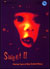
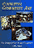
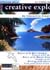
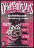
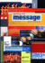
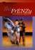
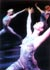
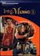
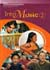

Events Events |
What's new

New music resource
"Through music, we can appreciate and understand our diverse New Zealand heritage..." (The Arts in the New Zealand Curriculum, page 52)
As a follow on from Sweet this new resource, Sweet II Another Taste of New Zealand Music, has been produced by the New Zealand Music Industry Commission in partnership with the Ministry of Education for years 7–10 music study. This resource comes in the form of a CD, teachers' notes, a CD-ROM, and a poster. It features another 50 bands with an updated range of activities and provides exciting new teaching and learning opportunities for the music arts discipline of The Arts in New Zealand Curriculum.
Copies of this book were distributed to all schools with students
from years 7–10 during term three of 2004.
Back to top
Art and Cognition: Integrating the visual arts in the curriculum
Arthur Efland is professor emeritus at the Ohio State University. In this book, he discusses ways in which new developments in cognitive science can be applied to the cognitive nature of learning in the visual arts, and to arts education in general. As an educator, he focuses his argument on how the arts can be used to develop cognitive ability in children.
Reference: Efland, A. (2002). Art and cognition: Integrating the visual arts in the curriculum. Reston, Virginia: Teachers College Columbia University, National Art Education Association.
Back to top

Computer Generated Art
A handbook for teachers who want to explore the creativity and practicality of drawing and manipulating images on the computer. Published 2001 by Educational Supplies Pty Ltd, 8 Cross Street, Brookvale, Australia 2100.
Back to top
Creative Explorer CD-ROM

This is an outstanding interactive resource about the arts of New Zealand. It is aimed primarily at students in years 7 and 8 but can be used with other levels. It provides role models, interactive activities, and inspiration for young New Zealanders, helping them to explore their own creativity and to become more involved in the arts. This rich teaching resource also suggests links for integrating the arts with other curriculum areas. Featured artists include:
- Patricia Grace – writing
- Michael Hurst – acting and directing
- Neil Ieremia – dancing
- Maree Sheehan – composing and performing music
- Fiona Pardington – photography
- Sima Urale – film-making.
Published by CWA New Media for Creative New Zealand. Find out more about Creative Explorer at www.tki.org.nz./r/arts/curriculum/creativex/index_e.php
|
Back to top
Design and Graphics in Technology
Design and Graphics in Technology is a resource for teachers
of years 1 to 8 and is the eighth book in a series designed to support
the implementation of Technology in the New Zealand Curriculum.
The book aims to provide teachers with a better understanding of the theoretical
basis of design as well as the role of design in the technological processes.
The book has six main sections covering the principles of design, visual
elements of design, the history of design, graphic techniques, modelling,
and design in the classroom. The principles of design are outlined. These
include movement, harmony, proportion, pattern, and rhythm as well as
style and contrast. Colour, point, line, shape, tone, form, and texture
are discussed in a section on the visual elements of design. Sketching,
rendering and formal drawing systems are some of the techniques described.
Overall the book is well placed to support the new arts curriculum statement.
Student activities are suggested throughout the book. These are generally
aimed at the older primary age group. Several case studies are included.
These are Developing an Environment: Years 1 – 3, Developing a System:
Years 4 – 6, and Developing a Product: Years 7 – 8. Objectives
for Year 9 – 13 students in graphics programmes provide an indication
of where the foundation learning in years 1 to 8 in design and graphics
leads. Published by Learning
Media Ltd, Box 3293, Wellington, New Zealand, for the Ministry of
Education.
Back to The Arts Online home page
Back to top
Drama in the Classroom
A resource for teachers of years 1 to 10. This video and booklet help
teachers to implement the drama discipline of The Arts in New Zealand
Curriculum. Produced for the Ministry of Education by the University
of Waikato, published by Learning
Media Ltd.
Copies of the book and video have been distributed schools.
Back to the Arts Online home page
Dramathemes

Dramathemes is a practical guide. The series has a range of ideas, innovative approaches and practical strategies to help teachers. Book A focuses on humour, mystery, fantasy, and animals; Book B on relationships, fairy tales, community, and the future. Accompanying units are structured under a range of headings. These include learning opportunities, games and exercises related to the unit, drama activities, a case study, strategies for extending ideas into the visual arts, writing and reading, and observational guides for teachers and students. The author, Larry Swartz, is a teacher educator. Published 2001 by User Friendly Resources, Christchurch.
Back to top
Dancing the Long White Cloud: teaching dance in years 1–10

This set of two videos and teacher's booklet is the first Ministry resource to support dance in the new arts curriculum. It has been written for teachers of students in years 1–6, and for teachers of dance students in years 7–10.
It aims to help teachers implement the dance curriculum by video demonstration supported by detailed explanation in the accompanying booklet. With clear explanations of the strands, achievement objectives, and learning outcomes of dance, it is intended that these new materials will help teachers understand important aspects of dance education. The booklet addresses concerns of teachers who are teaching dance for the first time and provides practical ideas for planning and assessment.
The two videos help teachers recognise good practice in classroom dance by using accessible teacher models. They include extensive footage in a wide range of school settings, with varying levels of complexity, and in different situations with students at different levels.
Dancing the Long White Cloud videos and booklet are intended to be used together as part of staff professional development and to help plan for specific groups of students. The booklet includes a helpful interactive section for teachers as learners.
Published 2002 by Learning Media Ltd, Box 3293, Wellington, for the Ministry of Education.
Back to top
Exploring the visual arts in years 1–6
The first two books in this series of five are Painting and Sculpture. A set of four posters accompanies each title. Published by Learning Media Ltd.
Copies of each book have been distributed to each school with year 1–6 teachers. Kura Kaupapa Māori and other schools have been sent reference copies.
Back to The Arts Online home page
Back to top
Getting the Message Across and Branching Out

Getting the Message Across and Branching Out are the two latest titles in the Choices series from the Ministry of Education. The Choices series is intended for use with students in years 9 and 10, and all the books are accompanied by a CD and notes for teachers.
The Choices series forms a component of the literacy materials being provided by the Ministry of Education to support teachers to produce effective literacy programmes for students at risk of underachieving. Choices can also be effectively used across the curriculum as part of a subject study or as a miscellany for individual listening or reading. The teachers' notes for both Getting the Message Across and Branching Out provide discussion questions for introducing the text, as well as learning activities for each story, poem, and article.
Published by Learning Media Ltd, Box 3293, Wellington, for the Ministry of Education.
Back to top
Ihi FrENZy: The Making of Dance

Ihi FrENZy: The Making of Dance is a video resource for students in years 9–13 who are studying dance. The suggested activities are particularily for students working at level 6 (year 11) of The Arts in the New Zealand Curriculum.
The kit contains a video that allows students to see and hear creative individuals behind the 2001 production of Ihi FrENZy by The Royal New Zealand Ballet and Te Matarae I Orehu. The accompanying teachers booklet suggestes activities for using the video and provides contextual details, including short profiles of the creative team involved in the production, plus reviews, articles, and lists of related resources and websites for further research and information gathering.
One copy of Ihi FrENZy is being distributed to every school with year 9–13 students to support the development of dance as a subject discipline in the school. More copies (including teachers personal copies) can be purchased at the education price of $26.00 + GST – use item number 10665 when ordering.
Schools that require additional copies may request or purchase them from:
Learning Media Customer Services, Box 3293, Wellington.
Phone: (04) 471 5549, Freephone: 0800 800 565
Email: orders@learningmedia.co.nz
Back to top
In Full Flight: New Zealand Dance

This dance video resource is a VHS compilation of four dance documentaries originally commissioned
for the televsion series Mercury Lane. The documentaries include:
MAU Pacific Dance Theatre
Lemi Ponifasio shares his philosophy about the role of dancers in
society and the politics of pacific dance.
Raewyn Hill
A profile of a contemporary dancer and choreographer. In 2002 Raewyn was
teaching at UNITEC School of Dance and presenting her first solo show.
Limbs Live
The 2001 revival of the 1980s New Zealand dance company, Limbs.
Twenty years on, the original Limbs alumni audition new dancers for
original works and reflect on the history of the company
Fifty Years Young: A History of the Royal New Zealand Ballet
2002 was the Royal New Zealand Ballet's 50th anniversary. This video has
interviews with current dancers and founding members. It includes
archival material from the 50 years of RNZB dance history.
"This video compilation will make a stunning addition to the growing
range of New Zealand-based resources now available to support dance
programmes." Dr Tina Hong, Associate Professor, Executive Head of School Performing
and Screen Arts at UNITEC Institute of Technology, Auckland.
In Full Flight: New Zealand Dance (2003). [Video]. Auckland: Greenstone Pictures. www.greenstonepictures.com
For more information, contact greenstone@gspictures.co.nz
Back to top
Into Music 1: Classroom Music in Years 1–3

This book is the first in a series and has been written for all teachers of students in years 13. It aims to inspire and reassure teachers by providing approaches to teaching music that reflect the strands and achievement objectives of The Arts in the New Zealand Curriculum and that also develop the essential skills described in The New Zealand Curriculum Framework.
Each chapter includes suggested learning outcomes, games and starter activities, teaching examples, and guidelines for assessment and evaluation. The CD accompanying this book contains a variety of musical examples.
Published by Learning Media Ltd, Box 3293, Wellington, for the Ministry of Education.
Back to top
Into Music 2: Classroom Music in Years 4–6

Into Music 2 is the second in a series of music curriculum support materials designed to provide practical and contemporary ideas for classroom music that link directly to The Arts in the New Zealand Curriculum. The book and its accompanying CD is aimed at generalist teachers who are teaching children at years 4–6 or at levels 2–3 of the curriculum.
The chapters cover Listening, Singing, Playing, and Creating and Representing Sound Innovations. Each chapter includes:
- suggested learning outcomes;
- games and starter activities;
- teaching approaches and examples;
- ideas for assessment;
- reflective questions; and
- useful references.
The teacher's resource also contains definitions of musical terms, overhead transparency masters, suggestions for resourcing for music, and an example of a graphic score.
The accompanying CD contains a variety of musical examples.
Published by Learning Media Ltd http://www.learningmedia.co.nz
P O Box 3293, Wellington, for the Ministry of Education.
Back to top
|